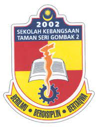

EDUCATION

Sekolah Kebangsaan Taman Sri Gombak 2
Primary School
SKTSG2 has been my educational home since I was seven years old.
Learn More
SMK Sungai Kertas
Secondary School
Following the UPSR examination. I kept on learning at SMKSK. I majored in accounting when I was in fourth grade.
Learn MoreUniversiti Teknologi MARA
Univeristy
I'm currently enrolled in my third higher education. After completing SPM, I registered right away at the UiTM Rembau Branch to start studying for a Diploma in Information Management.
Learn More